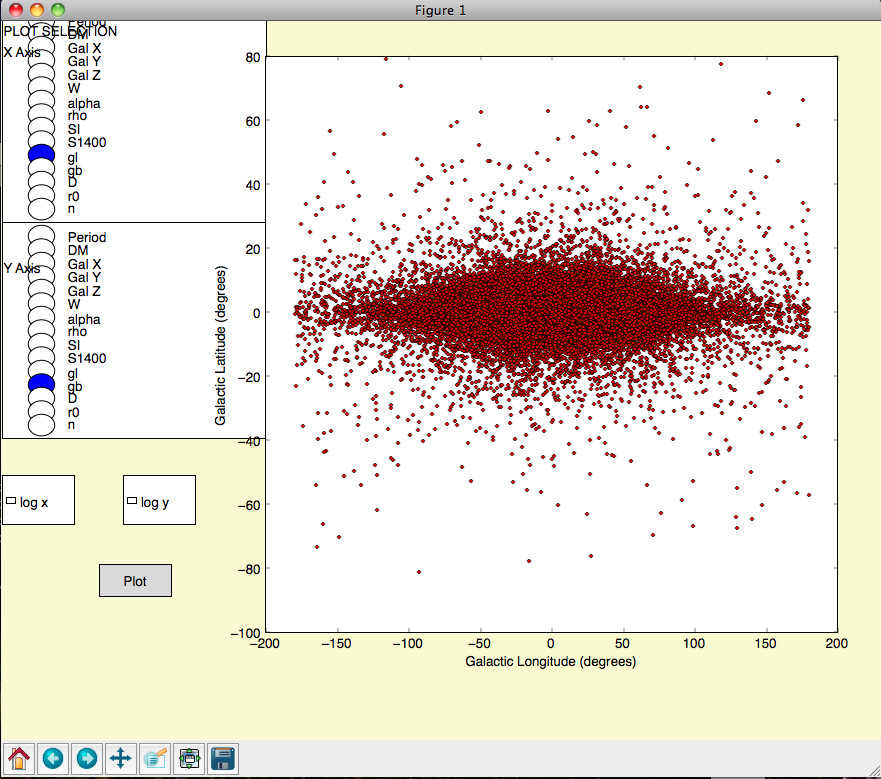

This page will outline a very simple pipeline for basic population simulations with PsrPopPy.
Population models are generated using the populate.py script. A common use would be to generate a population of normal pulsars using the Parkes Multibeam Pulsar Survey as a basis. This survey detected 1038 pulsars (at last count). Using default radial distribution, period and luminosity models, we can generate such a population using the command:
python populate.py -n 1038 -surveys PMSURV
This will then run for a few minutes, until the model PMSURV survey has detected 1038 pulsars. The file populate.model will be produced by default, which is a pickled population object.
If, instead, you wanted to use the Lyne & Manchester (1998) electron distribution, and for whatever reason wanted to store the output in the file pop_lm98.model, then we could run:
python populate.py -n 1038 -surveys PMSURV -dm lm98 -o pop_lm98.model
A different output file will then be produced, where the population uses the new simulation parameters.
Once you’ve generated a pulsar population model, the dosurvey.py script can be used to run the model through a past, present or future, pulsar survey (as specified in files in the survey directory — see _model-survey-files).
For example, say we want to take the population model we just created, pop_lm98.model, and estimate from this how many pulsars would be detected in a putative LOFAR pulsar survey. This can be simply done using:
python dosurvey.py -f pop_lm98.model -surveys LOFAR
Which will print out the results of the survey, and write a results file called LOFAR.results, which again is in the Pickle format. To write an ascii summary file, and an ascii file containing the parameters of all detected pulsars, simply add some extra flags:
python dosurvey.py -f pop_lm98.model -surveys LOFAR --asc --summary
Note that multiple model surveys may be run at once. To do so, just list as many as required after the -surveys flag. The results file can also be turned off:
python dosurvey.py -f pop_lm98.model -surveys LOFAR GMRT GBNCC --noresults
There are two ways to visualise the populations generated by either populate.py (.model) or dosurvey.py (.results). To plot basic histograms of various parameters, use the view.py script:
python view.py -f <model> -p <parameter>
Here <parameter> could be period, dm, or several other options, as outlined in _view_docs. Assuming the Matplotlib package is installed, this will generate a histogram which can then be saved or printed as necessary.
To create a histogram of the logarithm of the selected parameter, use:
python view.py -f <model> -p <parameter> --logx
For more detailed information, sometimes it may be useful to plot two parameters against one another. For this, use visualize.py:
python visualize.py -f <model>
This will open a window with some radio buttons on the left-hand-side. Select a parameter for the x-axis, one for the y-axis, and select whether you want to plot the logarithms of these parameters (see screenshot below).
